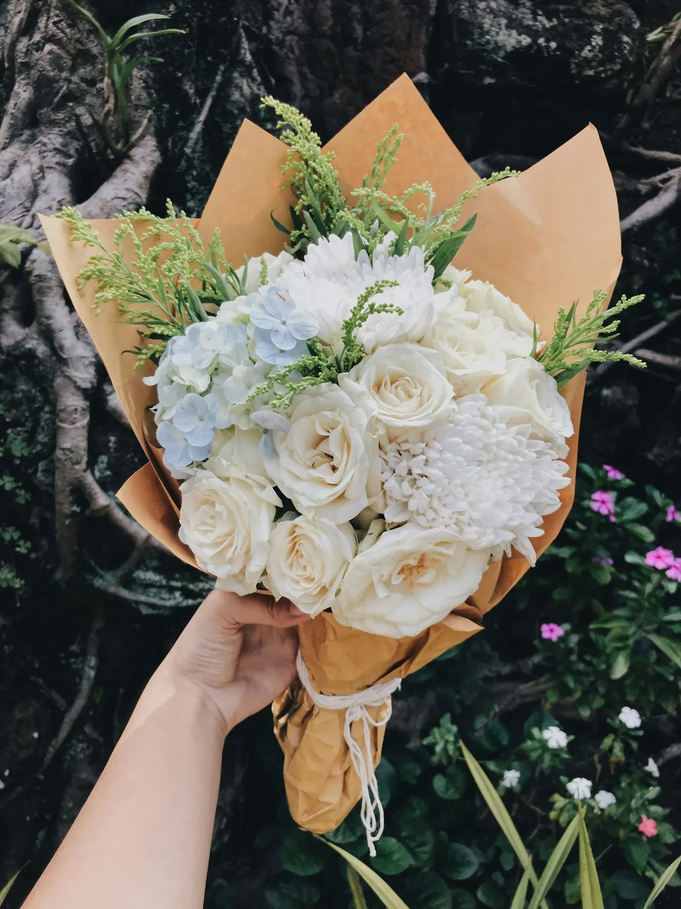
01 · BOUQUET
花束訂製
生日、紀念日、告白與畢業花束，依心意與喜好配色。
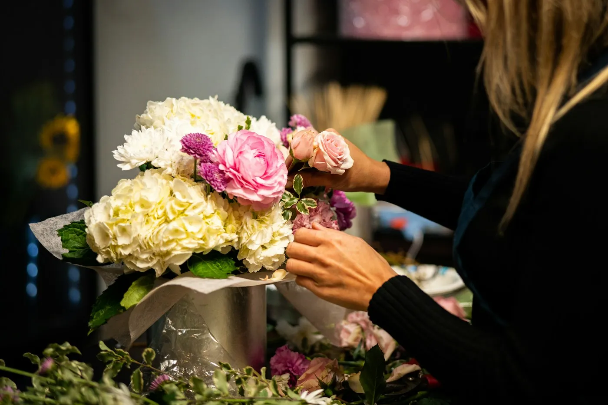
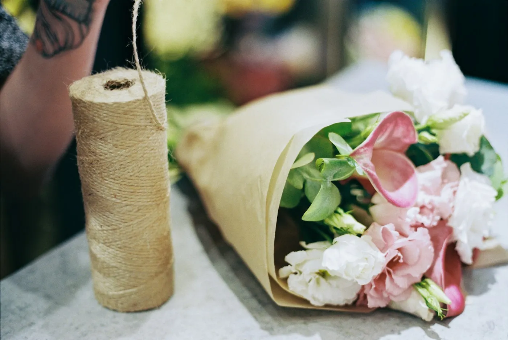
About
棲蒔花事的「棲」是停留，「蒔」是栽種。我們希望每一束花，都能在收到的人身邊多停留一些時間。
每週依季節挑選花材，從當令的鮮花到耐放的乾燥花都有。訂花前會先聽你說送給誰、想表達什麼，再一起決定花色與尺寸。
Services
主要花藝服務如下。花材依季節與到貨狀況調整，詳細內容歡迎用 LINE 詢問。

生日、紀念日、告白與畢業花束，依心意與喜好配色。
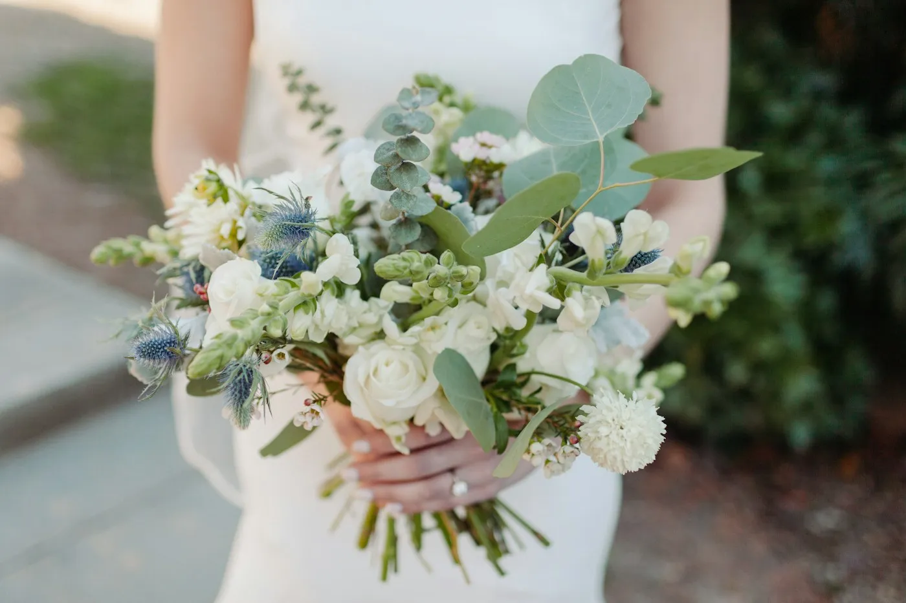
新娘捧花、胸花、桌花與迎賓佈置，提前討論整體風格。
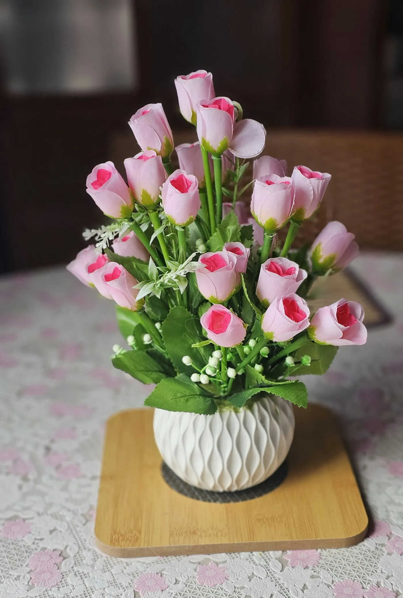
開幕、喬遷與節日祝賀盆花，可附上祝賀卡片。
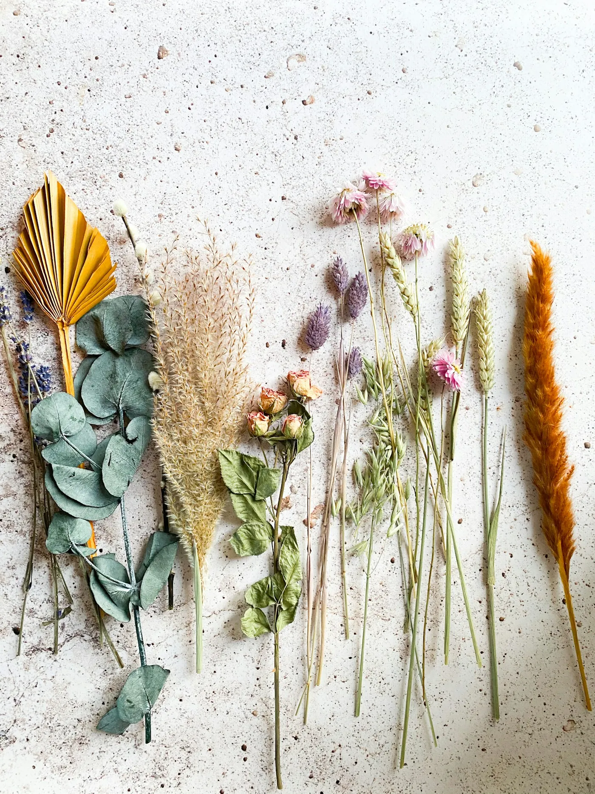
可以久放的乾燥花束與擺飾，適合當作紀念禮物。
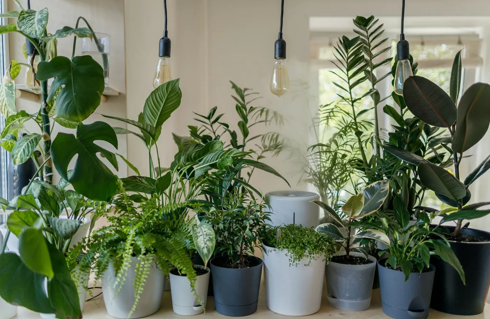
好照顧的觀葉植物與盆器搭配，送禮或佈置都合適。
小班制花束與花圈手作課，也可以預約包班。
Process
第一次訂花也不用擔心，從詢問到取花大致是這樣。
告訴我們用途、日期與喜歡的顏色，可附參考照片。
依當週花材建議花種、尺寸與包裝風格。
花藝師當天製作，完成後先傳照片確認。
到店取花，或安排宜蘭市區配送。
Hours
以下為示意營業時間，情人節、母親節等節日前後另行公告。
| 時段 | 一 | 二 | 三 | 四 | 五 | 六 | 日 |
|---|---|---|---|---|---|---|---|
| 上午 10:00–13:00 | 休 | ● | ● | ● | ● | ● | ● |
| 下午 13:00–17:00 | 休 | ● | ● | ● | ● | ● | ● |
| 傍晚 17:00–19:30 | 休 | ● | ● | ● | ● | ● | 休 |
Space
綠意與花香交織的小空間，有花藝工作台也有植栽角落。照片為氣氛示意。
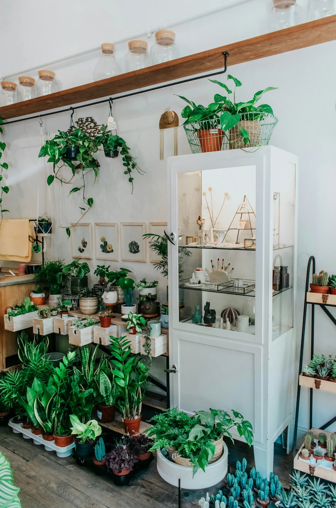
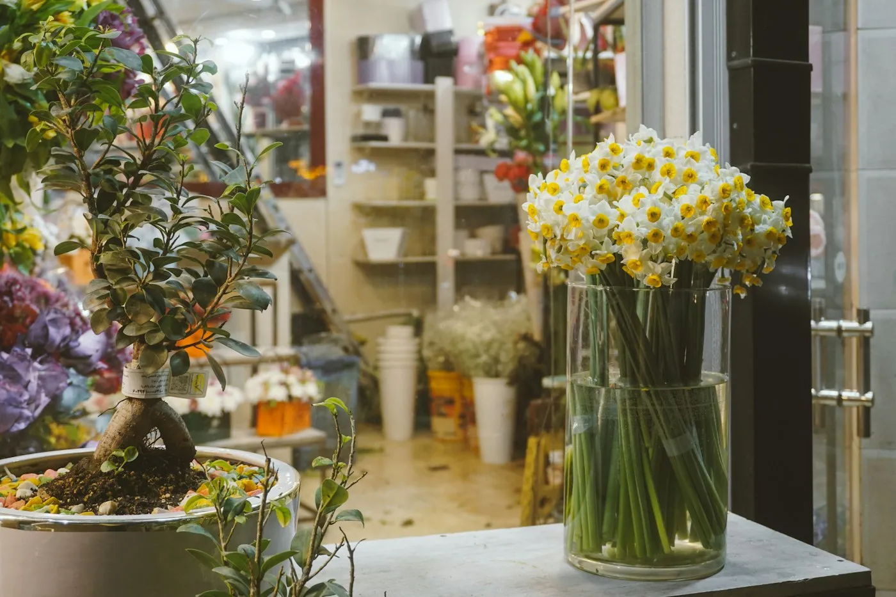
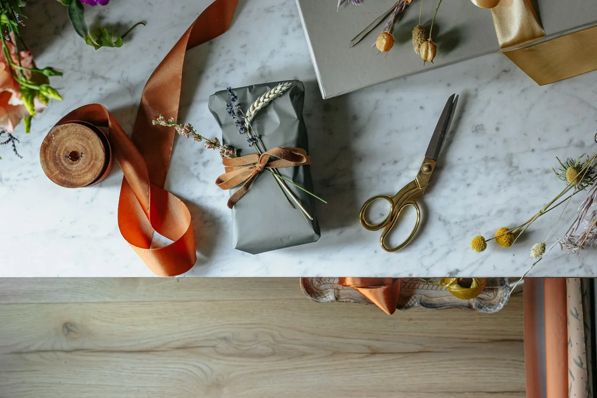
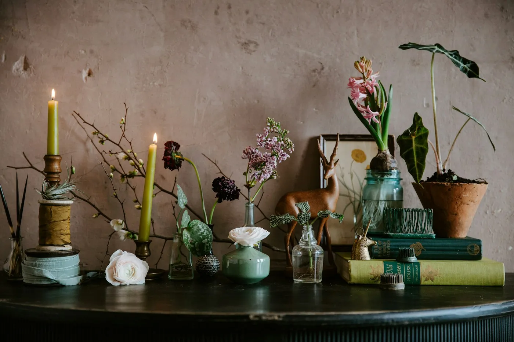
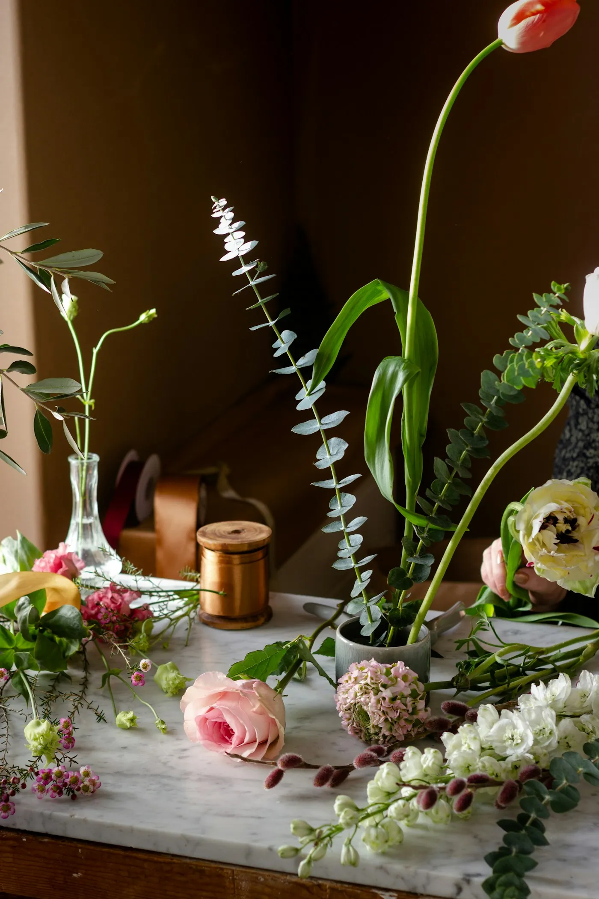
FAQ
訂花前最常被問到的問題。
一般花束建議提前 1–2 天，節日與婚禮花藝請盡早預約；當日需求可先用 LINE 詢問。
可以，會依當週到貨狀況確認；若指定花材缺貨，會先和你討論替代方案。
宜蘭市區可安排配送，其他地區請先詢問。
依花種與環境不同，一般鮮花約可觀賞數天，會附上照顧小卡說明。
依花材、尺寸與用途而定，討論時會先確認預算範圍再製作。
Access
地址與位置圖皆為示意。
用 LINE 告訴我們日期與心意，我們幫你搭配花材。